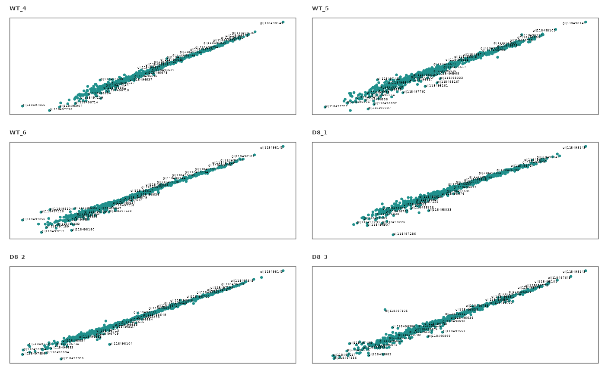

This function generates scatter plots to visualize the correlation between a given pair of technical replicates (Eg: 1 vs 2) for each sample.
Usage
corr_plot(
raw_df,
rep_1,
rep_2,
save = FALSE,
file_type = "pdf",
palette = "viridis",
text_size = 5,
n_row = 4,
n_col = 4,
dpi = 80,
file_path = NULL
)Arguments
- raw_df
A
raw_dfobject (output ofcreate_df) containing technical replicates.- rep_1
Numerical. Technical replicate number.
- rep_2
Numerical. Number of the second technical replicate to compare to
rep1.- save
Logical. If
TRUEsaves a copy of the plot in the directory provided infile_path.- file_type
File type to save the scatter plots. Default is
"pdf".- palette
Viridis color palette option for plots. Default is
"viridis". Seeviridisfor available options.- text_size
Text size for plot labels, axis labels etc. Default is
10.- n_row
Numerical. Number of plots to print in a row in a single page. Default is
4.- n_col
Numerical. Number of plots to print in a column in a single page. Default is
4.- dpi
Plot resolution. Default is
80.- file_path
A string containing the directory path to save the file.
Examples
## Use a data set containing technical replicates to create a raw_df object
raw_df <- create_df(
prot_groups = "https://raw.githubusercontent.com/caranathunge/promor_example_data/main/pg2.txt",
exp_design = "https://raw.githubusercontent.com/caranathunge/promor_example_data/main/ed2.txt",
tech_reps = TRUE
)
#> 0 empty row(s) removed.
#> 1 empty column(s) removed.
#> 12 reverse protein(s) (rows) removed.
#> 29 protein contaminant(s) (rows) removed.
#> 188 protein(s) identified by 2 or fewer unique peptides removed.
#> Zeros have been replaced with NAs.
#> Data have been log-transformed.
# \donttest{
## Compare technical replicates 1 vs. 2 for all samples
corr_plot(raw_df, rep_1 = 1, rep_2 = 2)
#> Warning: The `size` argument of `element_rect()` is deprecated as of ggplot2 3.4.0.
#> ℹ Please use the `linewidth` argument instead.
#> ℹ The deprecated feature was likely used in the promor package.
#> Please report the issue at <https://github.com/caranathunge/promor/issues>.
#> Warning: Removed 285 rows containing missing values or values outside the scale range
#> (`geom_point()`).
#> Warning: Removed 285 rows containing missing values or values outside the scale range
#> (`geom_text()`).
#> Warning: Removed 302 rows containing missing values or values outside the scale range
#> (`geom_point()`).
#> Warning: Removed 302 rows containing missing values or values outside the scale range
#> (`geom_text()`).
#> Warning: Removed 259 rows containing missing values or values outside the scale range
#> (`geom_point()`).
#> Warning: Removed 259 rows containing missing values or values outside the scale range
#> (`geom_text()`).
#> Warning: Removed 352 rows containing missing values or values outside the scale range
#> (`geom_point()`).
#> Warning: Removed 352 rows containing missing values or values outside the scale range
#> (`geom_text()`).
#> Warning: Removed 249 rows containing missing values or values outside the scale range
#> (`geom_point()`).
#> Warning: Removed 249 rows containing missing values or values outside the scale range
#> (`geom_text()`).
#> Warning: Removed 303 rows containing missing values or values outside the scale range
#> (`geom_point()`).
#> Warning: Removed 303 rows containing missing values or values outside the scale range
#> (`geom_text()`).

# }